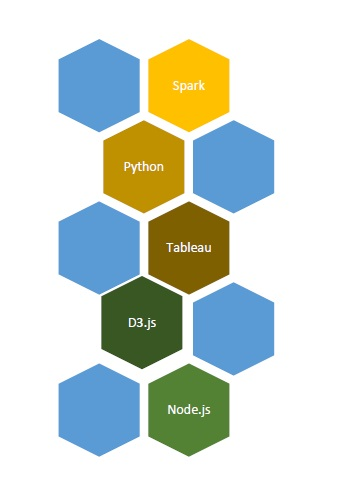
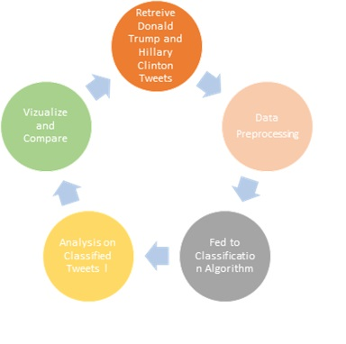
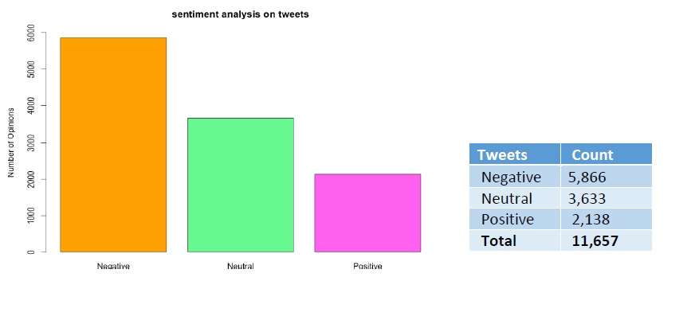
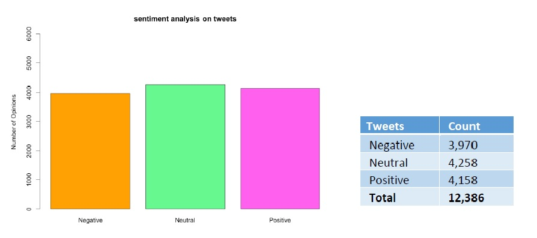

Tools Used
Hypothesis overview
POSITIVE, NEGATIVE AND NEUTRAL TWEETS - HILLARY CLINTON
POSITIVE, NEGATIVE AND NEUTRAL TWEETS - DONALD TRUMP
BIGRAM AND TRIGRAM ANALYSIS

You can find my final project in the window below. The visualization and intuitions got from the project have been grouped put together in a website
Twitter Sentiment AnalysisWe were able to collate the results and visualization and we were able to successfully publish a report on our findings from the data that we collected from twitter
View final report
Click on the below link to navigate to my GITHUB link
View GITHUB code